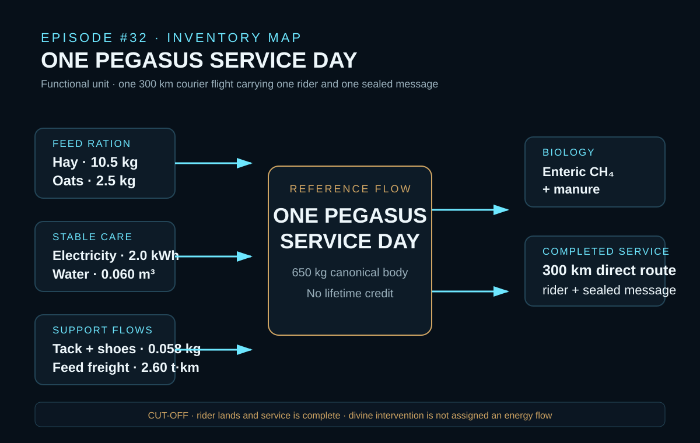
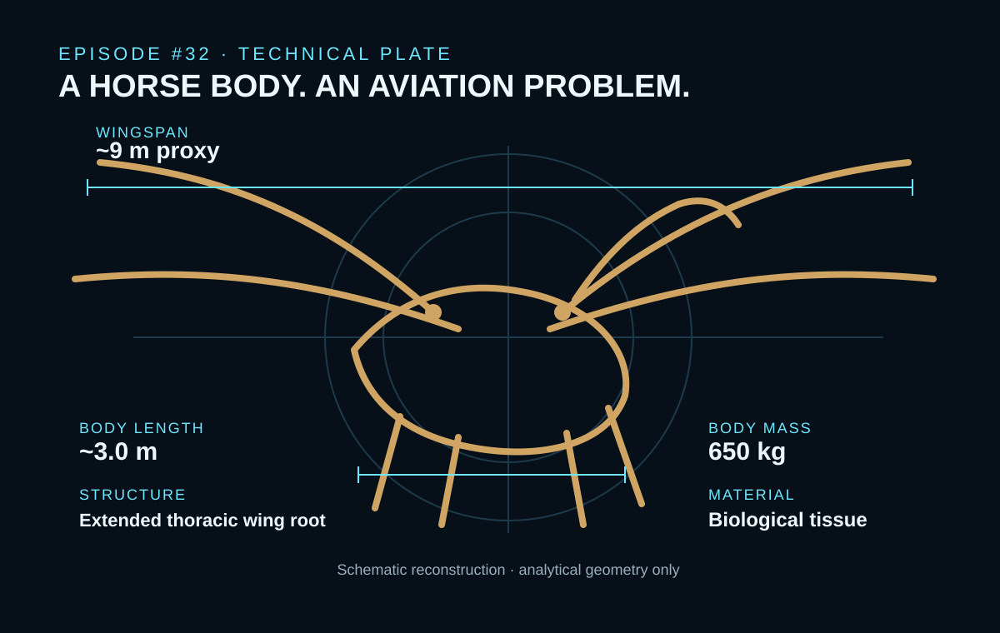
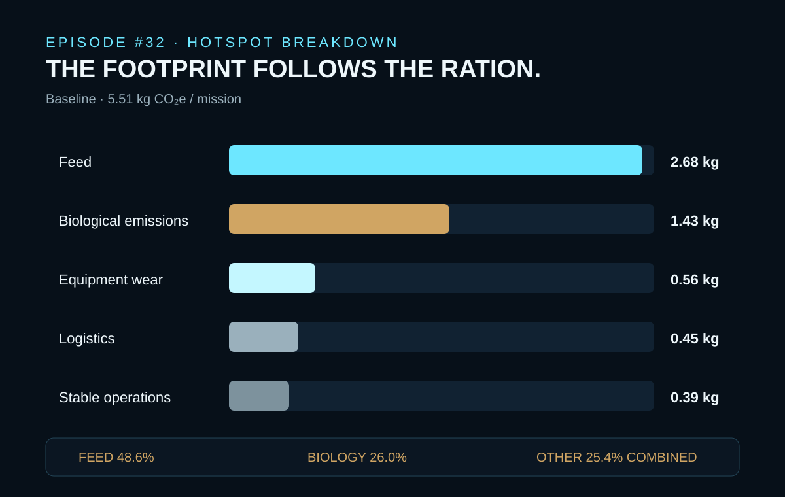

EPISODE #32 · MYTHS & LEGENDS
Pegasus
If the object is impossible but the service boundary is not, what does one Pegasus courier mission leave in the inventory?
THE SUBJECT
A horse body translated into an airborne service day.
The approved episode defines the functional unit as one 300 km courier flight carrying one rider and one sealed message. The reference flow is one Pegasus service day: one flight day with no lifetime credit.
The reconstruction freezes one canonical subject before calculation: a 650 kg biological body, approximately 3.0 m in body length, with a roughly 9 m wingspan proxy and an extended thoracic wing root. The route is a 300 km direct flight in an Ancient Greek proxy context.
Feed production, biological emissions, stable energy, water, tack wear and feed delivery are inside the boundary. Rider production, divine intervention, land-use change, breeding and infrastructure construction are excluded. The cutoff occurs when the rider lands and the service is complete.
The object is impossible; the service boundary is not.
650 kg body
The canonical Pegasus body is modeled at 650 kg with a roughly 9 m wingspan proxy.
300 km mission
The service is one direct courier route carrying one rider and one sealed message.
48.6% feed hotspot
Hay and oats contribute 2.68 kg CO₂e and dominate the 5.51 kg CO₂e baseline.
Proxy-sensitive
Changing only feed emission factors moves the result from 4.46 to 7.86 kg CO₂e.
VISUAL MODEL
From stable inputs to one completed flight
The model treats Pegasus as one service day: preparation, biological operation, support flows and a completed 300 km courier mission.


LIFE CYCLE INVENTORY
The inventory is a service day
Quantities and disclosed factors follow the approved episode. Where the carousel reports only a grouped contribution, the website does not invent a missing row-level factor.
| Stage | Component / activity | Activity data | Climate change | Modelling basis |
|---|---|---|---|---|
| Feed | Hay forage | 10.5 kg | 1.48 kg CO₂e | Alfalfa/hay proxy; source ID S1; 0.141 kg CO₂e/kg. |
| Feed | Oats | 2.5 kg | 1.20 kg CO₂e | Concentrate ration; source ID S2; CarbonCloud factor 0.480 kg CO₂e/kg. |
| Biology | Enteric CH₄ | 0.00274 head-year | 1.33 kg CO₂e | One horse-day; source ID S3; IPCC proxy 486 kg CO₂e/head·yr. |
| Biology | Manure | 0.00274 head-year | Included in 1.43 kg biological total | Managed stable. The approved carousel does not separately disclose the manure factor in its factor table. |
| Stable operations | Electricity | 2.0 kWh | 0.37 kg CO₂e | Stable operations; source ID S5; DEFRA 2026 factor 0.184 kg CO₂e/kWh. |
| Stable operations | Water | 0.060 m³ | 0.02 kg CO₂e | Drinking + grooming; source ID S6; DEFRA 2026 factor 0.362 kg CO₂e/m³. |
| Equipment | Tack + shoes | 0.058 kg | 0.56 kg CO₂e | Allocated wear. The approved result reports the equipment-wear contribution; the row-level factor is not shown in the carousel factor table. |
| Logistics | Feed freight | 2.60 t·km | 0.45 kg CO₂e | 13 kg × 200 km; source ID S9; DEFRA 2026 road-freight factor 0.173 kg CO₂e/t·km. |
Included
Feed production, biological emissions, stable energy, water, tack wear and feed delivery.
Excluded
Rider production, divine intervention, land-use change, breeding and infrastructure construction.
Freight rule
The 300 km courier route is not freight activity. Feed delivery is 13 kg × 200 km = 2.60 t·km.
Proxy disclosure
DEFRA 2026 is used where representative factors exist. Feed and horse biology require external literature or inventory proxies, kept separate in the source register.
HOTSPOT
The footprint follows the ration
Feed dominates the service day; biological operating emissions are the second largest contribution.

Main result
5.51 kg CO₂e
Per 300 km courier mission.
Feed
2.68 kg CO₂e · 48.6%
Hay and oats are the dominant hotspot.
Biology
1.43 kg CO₂e · 26.0%
Enteric methane and manure remain material operating emissions.
Other flows
25.4% combined
Equipment wear, logistics and stable operations make up the balance.
Sensitivity A · body mass
550 kg → 4.80 kg CO₂e
650 kg → 5.51 kg CO₂e
800 kg → 6.57 kg CO₂e
Feed, water and biological emissions scale with body mass; fixed stable and equipment flows remain unchanged. The range is −12.8% to +19.2%.
Sensitivity B · feed factors
Low → 4.46 kg CO₂e (hay 0.084; oats 0.300)
Baseline → 5.51 kg CO₂e (hay 0.141; oats 0.480)
High → 7.86 kg CO₂e (hay 0.300; oats 0.750)
Only feed emission factors change; mass, boundary and minor flows stay locked.
Interpretation
The result is more sensitive to feed sourcing than to stable utilities. Agricultural data quality is the principal uncertainty exposed by the published factor test.
Boundary discipline
No magic energy credit is applied. The mythical event is modeled as preparation plus one completed service.
THE VERDICT
“A winged horse still leaves hoofprints in the inventory.” The impossible becomes useful when its assumptions become visible.